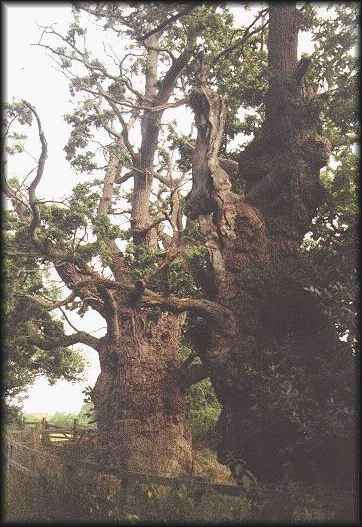

Gog and Magog

Near Glastonbury, there are other places which are seen as Sacred Sites; among these are the two ancient oaks of Gog and Magog, believed to be the last remains of a Druidical avenue leading up to the Tor.